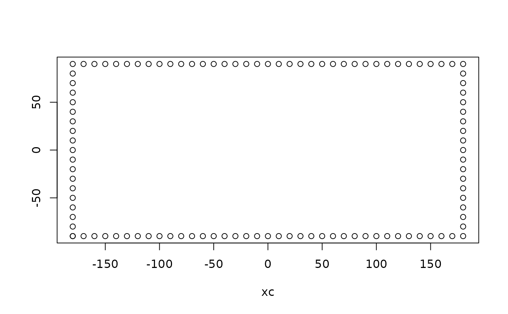

R/coordinates.R
vaster_boundary.Rd
Generates the coordinates around a grid boundary, with a coordinate for each grid cell corner.
vaster_boundary(dimension, extent = NULL)
integer ncol, nrow
numeric extent xmin,xmax,ymin,ymax
matrix of xy coordinates
The orientation is starts along the bottom and goes counter-clockwise.
vaster_boundary(c(3, 4)) #> xc #> [1,] 0 0 #> [2,] 1 0 #> [3,] 2 0 #> [4,] 3 0 #> [5,] 3 1 #> [6,] 3 2 #> [7,] 3 3 #> [8,] 3 4 #> [9,] 2 4 #> [10,] 1 4 #> [11,] 0 4 #> [12,] 0 3 #> [13,] 0 2 #> [14,] 0 1 #> [15,] 0 0 plot(vaster_boundary(c(36, 18), c(-180, 180, -90, 90))) 
